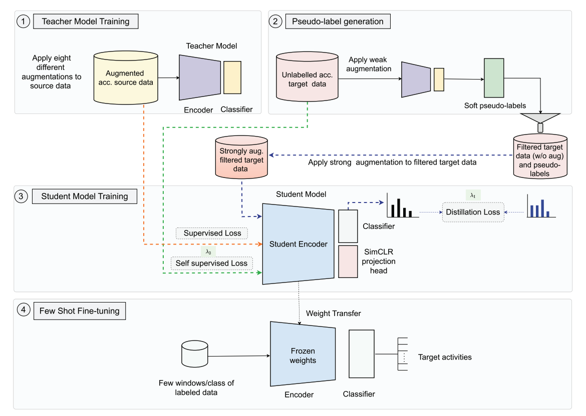
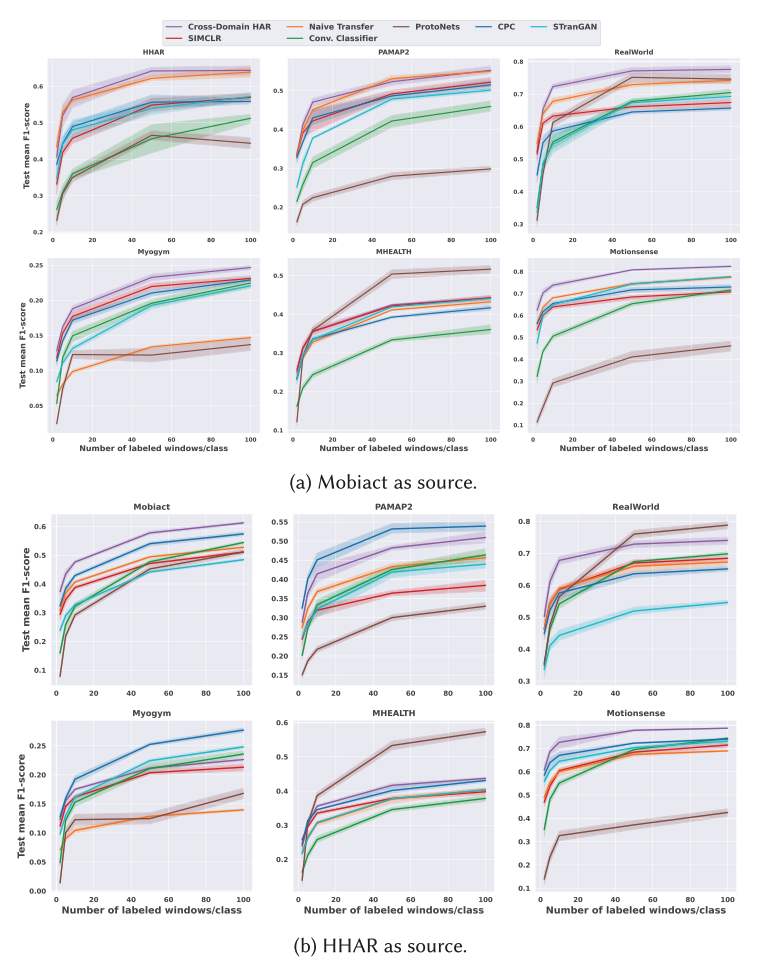

Cross-Domain HAR bridges large source-to-target domain gaps by combining knowledge distillation with self-supervision on unlabeled target data, in a teacher-student self-training paradigm. A teacher model trained on the labeled source domain transfers what it knows about activity structure to a student model deployed in the target domain. Rather than relying on the teacher's hard labels alone, the student is supervised by the teacher only on the most confident pseudo-labels (top-K per class), which acts as a soft, noise-tolerant form of distillation across heterogeneous activity vocabularies and sensor placements.
In parallel, the student exploits the unlabeled target stream through self-supervised learning, picking up target-specific signal structure that the source-trained teacher cannot provide. The two signals are bound together by consistency regularization: weak augmentations of an input are passed through the teacher, strong augmentations of the same input are passed through the student, and the student is trained to match the teacher's prediction. This forces the student to internalize the same activity concept across very different views of the signal, which is what enables generalization across users, body locations, and sensor configurations.
After this distillation-plus-self-supervision pre-training, the student is fine-tuned on just a few seconds of labeled target data per activity class. The resulting framework treats few-shot cross-domain transfer not as fine-tuning a borrowed feature extractor, but as jointly distilling knowledge from a labeled source domain and self-supervising on the unlabeled target stream, with both processes sharing a single student model.
Most real-world HAR deployments involve target domains where only a few seconds of labeled sensor data per activity are realistic to collect, with sensor placements and activity sets that differ from existing public datasets (e.g. healthcare-specific movements on novel body locations). Cross-Domain HAR enables substantial performance improvements over the state-of-the-art in such few-shot, large-gap settings without requiring expensive new annotation campaigns, helping bootstrap HAR models quickly for new applications.

Through extensive evaluation across a range of benchmark HAR datasets, Cross-Domain HAR delivers significant accuracy improvements over state-of-the-art transfer-learning baselines in practically relevant few-shot scenarios. We also conduct detailed component analyses to identify which parts of the framework drive successful transfer, and provide practical suggestions for applying the framework to real-world HAR applications.
@article{thukral2025cross,
title = {Cross-Domain HAR: Few-Shot Transfer Learning for Human Activity Recognition},
author = {Thukral, Megha and Haresamudram, Harish and Pl{\"o}tz, Thomas},
journal= {ACM Transactions on Intelligent Systems and Technology},
volume = {16}, number = {1}, pages = {1--35},
year = {2025},
doi = {10.1145/3704921}
}